Co-op Mission Guide: Malwarfare
Purifer Facility
Sections on this Page
Mission Summary
Long ago, this protoss facility was used to convert the personalities of great warriors into AI known as the Purifiers. Researchers tested the process on a Tal'darim prisoner, whose rogue personality began to attack the facility. Now the Purifier guardian Aurana is attempting to regain control.

Objectives
Primary Objective
- Do not let Aurana's Transport be destroyed
- Purify Security Terminals (5)
Secondary Objective
- Download AI Personalities (6)
Suppression Tower Order
Change all base analysis pictures to race:
The first camp you will have to take is positioned over your expansion. The expansions on Malwarfare for both players are defended by static defense and a few units.
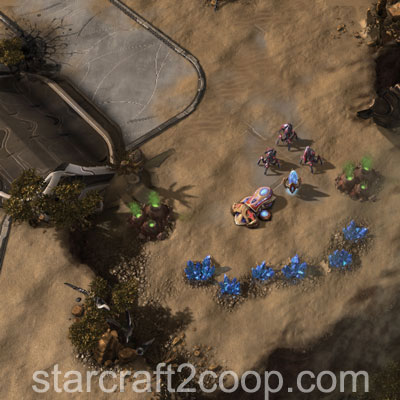
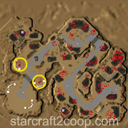
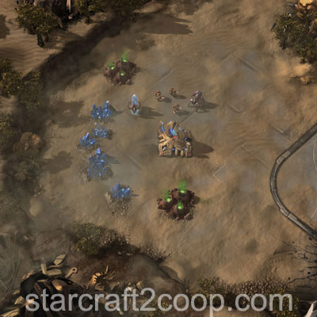
Aurana's Transport will move from Terminal to Terminal and she will purify each one. It takes 2:45 to purify the Terminals. Your goal is to defend her transport from attack waves and Suppression Towers. After every terminal has been purified, she heals any damage taken up to 5,000HP.
Suppression Towers deal 240 damage per volley to Aurana's Transport. That ability has a cooldown of 6 seconds.
However, there are two additional timers involved as well. When players engage a Suppression Tower, it stops attacking Aurana for 30 seconds before resuming attacks again. Additionally, if players have not destroyed the tower within three minutes of it spawning, it will attack Aurana's transport every 2 seconds.
The first Terminal is where Aurana starts when you start the mission. No Suppression Towers will spawn to attack.
For the second Terminal, one Suppression Tower will spawn. The image below shows the potential spawn points of the Suppression Tower. The Suppression Tower spawn locations are defended very lightly by units and static defense.
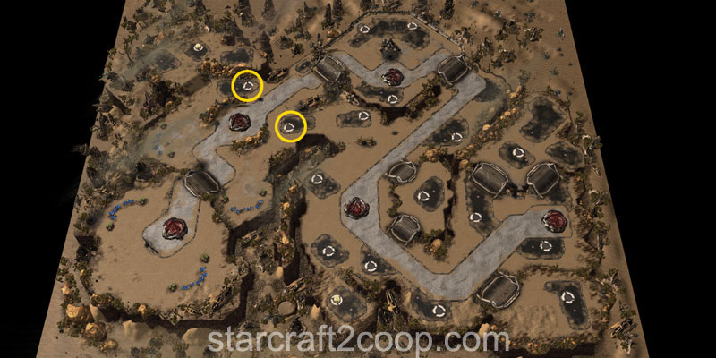
For the third Terminal, two Suppression Towers will spawn. There are two possible patterns for the spawn points of these towers (shown in different colors). Filled areas indicate the first tower spawned, while lines indicate which tower spawns next.
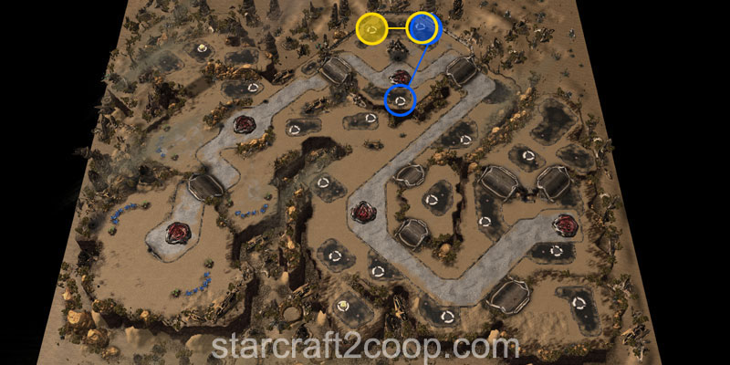
For the fourth Terminal, three Suppression Towers will spawn. There are two possible patterns for the spawn points of these towers (shown in different colors). Filled areas indicate the first tower spawned, while lines indicate which tower spawns next.
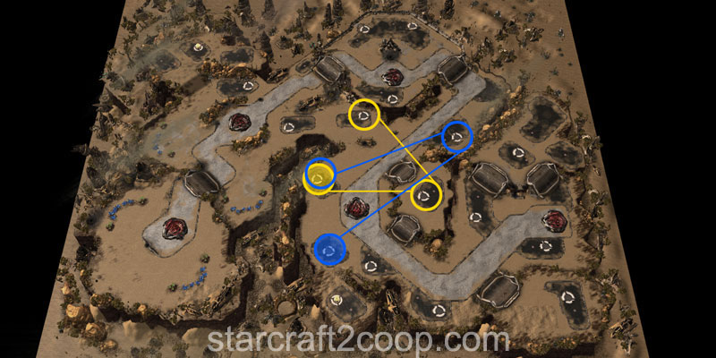
For the fifth Terminal, four Suppression Towers will spawn. There are two possible patterns for the spawn points of these towers (shown in different colors). Filled areas indicate the first tower spawned, while lines indicate which tower spawns next.
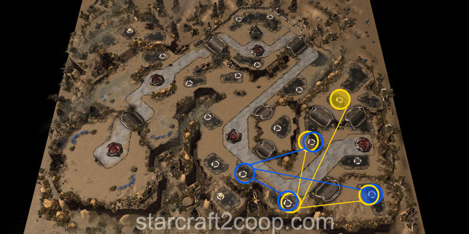
A video for the order of Suppression Tower spawn patterns is below:
Suppression Towers have two abilities:
- Multi-Target Lock On: Deals 40 damage to all enemy units in the targeting circles and slows their attack speed and movement speed by 50% for 4 seconds
- Single-Target Lock On: Deals 150 damage to all enemy units in the targeting circle
Completing the Bonus Objective
The bonus objective requires you to download three AI Personalities each from two beacons on the map. This is the only bonus objective that requires resources to complete. Each AI personality costs 350 Minerals/100 Gas to download. Therefore, you will require 1050 minerals/300 Gas to download all personalities for a single objective. The objective will expire exactly 4 minutes after it starts. Each beacon is defended by a force of enemy units and static defense.
The first beacon is shown below.
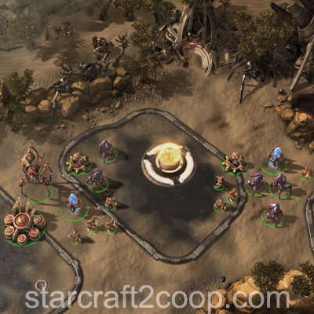
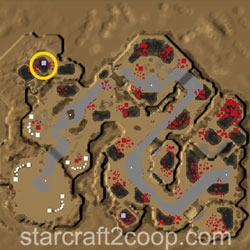
The second beacon is shown below.
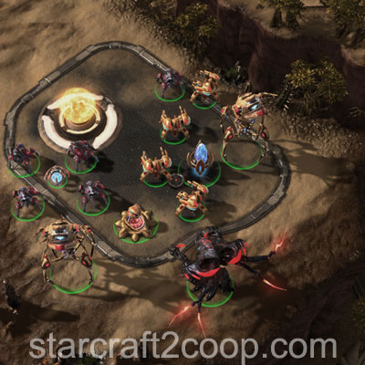
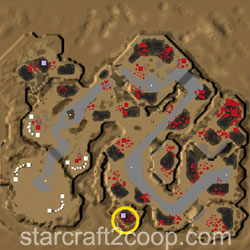
Note that when the first A.I. Personality download has been initiated, three attack waves will spawn to attack and destroy the objective. Once these are cleared, you only require vision in order to complete the rest of the downloads.
Timings
Note: Information on Tech and Strength levels can be found on the Enemy Compositions page.
There are three different timings that will be listed in this section. These are:
- Suppression Tower Timings: The are the timings for each Suppression Tower spawn.
- Harass Wave Timings: These are smaller waves that attack Aurana's Transport while she is purifying each terminal.
- Attack Wave Timings: These are attack waves that target your base.
The Suppression Tower Spawn Timings are shown below. All times are shown as time left on the clock to completion of the terminal.
Terminal 2:
| Tower | Time Left |
|---|---|
| 1 | 1:00 |
Terminal 3:
| Tower | Time Left |
|---|---|
| 1 | 1:55 |
| 2 | 1:20 |
Terminal 4:
| Tower | Time Left |
|---|---|
| 1 | 2:20 |
| 2 | 1:15 |
| 3 | 0:33 |
Terminal 5:
| Tower | Time Left |
|---|---|
| 1 | 2:10 |
| 2 | 1:35 |
| 3+4 | 0:55 |
The Harass Wave Spawn Timings are shown below. All times are shown as time left on the clock to completion of the terminal.
Terminal 2:
| Wave | Time Left | Tech Level | Stength Level |
|---|---|---|---|
| 1 | 2:25 | 1 | 1 |
| 2 | 2:00 | 1 | 1 |
| 3 | 1:35 | 1 | 1 |
| 4 | 1:00 | 1 | 2 |
| 5 | 0:20 | 1 | 2 |
Terminal 3:
| Wave | Time Left | Tech Level | Stength Level |
|---|---|---|---|
| 1 | 2:30 | 2 | 2 |
| 2 | 2:15 | 2 | 2 |
| 3 | 1:40 | 2 | 2 |
| 4 | 1:20 | 2 | 2 |
| 5 | 1:00 | 2 | 2 |
| 6 | 0:41 | 2 | 2 |
| 7 | 0:20 | 2 | 2 |
Terminal 4:
| Wave | Time Left | Tech Level | Stength Level |
|---|---|---|---|
| 1 | 2:25 | 3 | 3 |
| 2 | 1:40 | 5 | 5 |
| 3 | 1:10* | 4 | 4 |
| 4 | 0:55 | 4 | 4 |
| 5 | 0:28** | 4 | 4 |
| 6 | 0:15 | 4 | 5 |
*Only on Blue Pattern (above).
**Only on Yellow Pattern (above)
Terminal 5:
| Wave | Time Left | Tech Level | Stength Level |
|---|---|---|---|
| 1 | 2:30 | 4 | 4 |
| 2 | 1:55 | 5 | 5 |
| 3 | 1:30 | 5 | 4 |
| 4 | 0:22 | 5 | 4 |
| 5 | 0:50 | 4 | 4 |
| 6 | 0:30 | 5 | 5 |
Attack waves work a little differently. The first attack wave will always occur at 3:36.
Howevever, the two subsequent attack waves will occur when the transport reaches a certain point on the map. The minimap below shows the points that trigger the second and third attack waves.
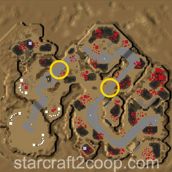
Strength and Tech Level information of these attack waves is below:
| Attack Wave | Tech Level | Strength Level |
|---|---|---|
| 1 | 1 | 1 |
| 2 | 3 | 3 |
| 3 | 4 | 4 |
Spawn Points
The spawn points for the Harass waves and Attack waves are different. Harass waves are created from a random point in the lock area.
However, attack waves have a fixed number of spawn positions. Attack Waves 1 and 2 have the same possible spawn points. The spawn points for attack waves 1 and 2 are shown below.
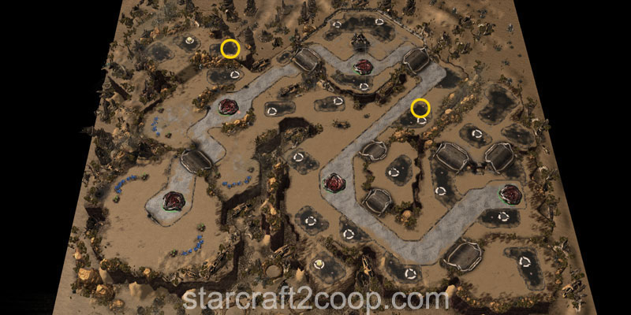
Attack Wave 3 only has one spawn point. This is shown below.
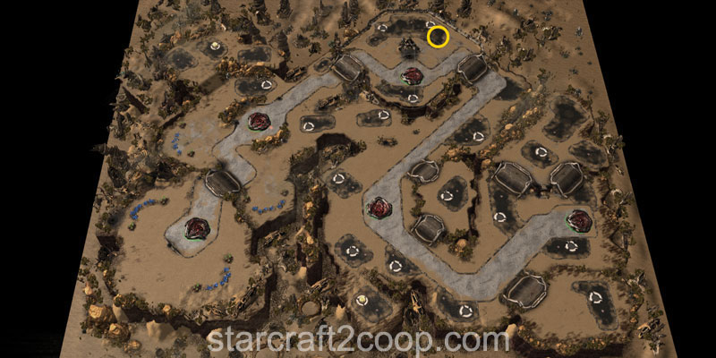
Mission Tips
- Pay attention to Aurana's Transport while it is moving. It will slow down if enemy units attack it, giving them even more time to damage it.
- Aurana's Transport does not regen to full HP at the end of every Terminal. It heals a total of 5000 HP per terminal.
- When downloading Personalities for the bonus objective, only three attack waves will spawn in close proximity to each other. Once those attack waves are cleared, all you need is vision to download the rest. No defenses are required.
- Pre-clearing the areas ahead of the transport is the best way to ensure it doesn't take damage and allows you to finish the mission as fast as possible.
Commander-specific Tips
- Abathur: Place Toxic Nests outside the camps at the expansions and lure the units to get early biomass.
- Abathur: Place Toxic Nests on attack wave and suppression tower defense spawn locations to weaken them.
- Alarak: (Risky) Sneak a probe down the back of the mineral line, drop a pylon and overcharge it to capture an early expansion.
- Han & Horner: Place Mag Mines on attack wave and suppression tower defense spawn locations to weaken them.
- Han & Horner: Because Suppression Towers are not Heroic, Space Station Reallocation will do its full damage to them. This means the first Suppression Tower can be instantly destroyed, while the others have their HP's significantly reduced.
- Karax: Use your Spear of Adun abilities to capture your expansion at the start of the game.
- Kerrigan: Use Omega worms outside each of the Suppression Tower spawn locations to allow you to access them quickly.
- Nova: If you use Siege Tanks, place Spider Mines on attack wave and suppression tower defense spawn locations to weaken them.
- Raynor: If you use Vultures, place Spider Mines on attack wave and suppression tower defense spawn locations to weaken them.
- Stetmann: Build Hatcheries near Security Terminals to provide a location to spread Stetellites from, as the distance between locations may be too large.
- Stukov: Build a 3rd Command Center and root it near the second terminal to spread creep.
- Zeratul: The Void Suppression Crystal can be used to delay the spawn of the Suppression Towers.
- Zeratul: Use Void Arrays outside each of the Suppression Tower spawn locations to allow you to access them quickly.